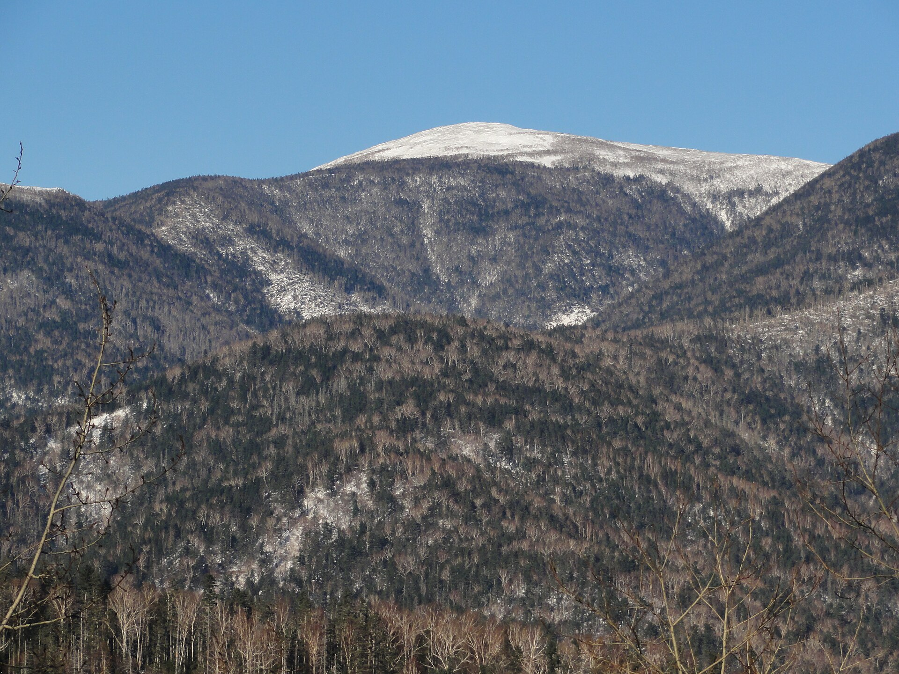

Дорога на Шкотово
Около часа от Владивостока, если не упираться в выезд из города в час пик. Выезжайте после завтрака, не на рассвете: парк смотрит при дневном свете.
День 08 из 10
День в Шкотовском районе. Амурские тигры, медведи, копытные и дальневосточные леопарды — с мостков, а не из машины на обочине.
Около часа от Владивостока, если не упираться в выезд из города в час пик. Выезжайте после завтрака, не на рассвете: парк смотрит при дневном свете.
Отдельные контуры: тигры, медведи, копытные, леопарды, хищники и птицы. Экскурсия идёт по настилам. Кормить животных со своей стороны нельзя, даже если кажется, что «все так делают».
Возвращение во Владивосток без второй большой точки. Восьмой день и так про животных. Вечер оставьте пустым.
Приморский сафари-парк стоит у посёлка Шкотово. Это не заповедник и не национальный парк. Это большая лесная территория, где зверей держат в просторных вольерах и показывают с безопасных галерей. Для человека, который вчера прошёл лес и не увидел ни одного леопарда, разница честная и полезная.
В парке есть амурский тигр, гималайский и бурый медведи, пятнистые олени, дальневосточный леопард. Экскурсоводы ведут группы по тематическим маршрутам. Заложите несколько часов, а не «заехали на сорок минут». Звери выходят к настилу, когда хотят, и торопить их расписанием яхты уже не нужно: яхты остались позади.
По пути легко набрать лишние бухты — Шамору, Стеклянную, ещё один водопад. Не набирайте. Шамора, она же Лазурная, красива и переполнена. Стеклянная — пляж окатанного стекла, отдельная история. В этом плане у них нет своего дня, и впихивать их в сафари значит не увидеть ни зверей, ни берег.
Цифры дикой популяции в парке повторять не стоит. Вчерашние 129 леопардов — про лес. Сегодняшние животные — конкретные, у них есть имена у смотрителей и распорядок. Смешивать учёт Минприроды и табличку на вольере — фактическая ошибка, которой в защите проекта лучше не делать.
Два дня были про зверей. Девятый — про ничего не делать. Бухта Триозёрье.
